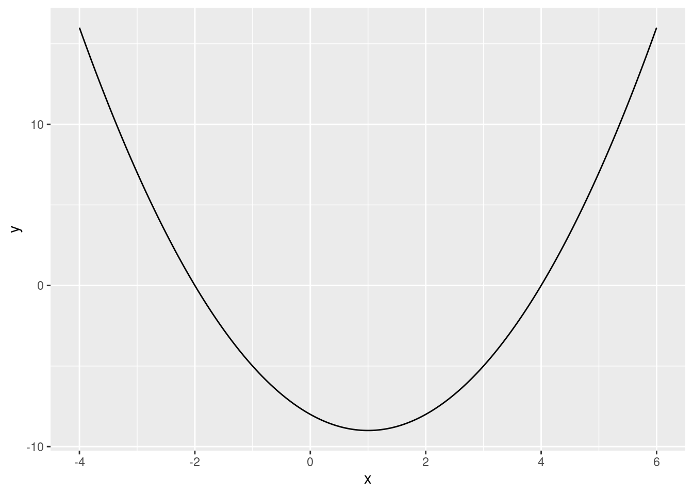
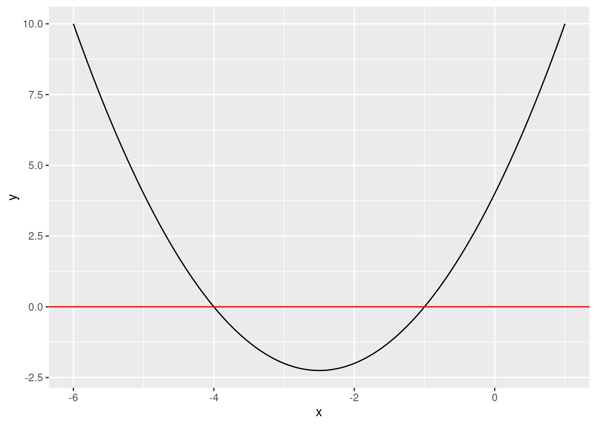

f <- function(x) {
y <- -8 - 2 * x + x^2
return(y)
}16 Making Functions
16.1 Creating Simple Functions
It is very easy to make your own customized functions in R. Suppose, for example, you want to make an R function to calculate the output of the quadratic function:
f(x) = -8 -2x +x^2
If we want to call this function f(), we would define it as follows:
The f is what we want to call the function. We assign to f using the assignment operator, <-, the “function” with a single argument x using function(x). After that we specify what the function is supposed to do:
- Calculate
y <- -8 - 2 * x + x^2 - Return
yas the output. We use thereturn()function to specify what the output of the function is.
We need to wrap what the function does in curly brackets ({ }) because what the function does can span several lines. Using the curly brackets tells R that these commands belong together in the function.
Let’s try out the function:
f(2)[1] -8f(3)[1] -5We can also pass a vector into the function to see the output for several values at once:
f(c(2, 3, 4))[1] -8 -5 016.2 Plotting Functions
We can also use ggplot() to plot the function. To do this we first create a sequence of values of x over the range that we want to see the function plotted. We then evaluate the function for each of these values of x and save it as y. We then combine x and y into a data.frame and plot it like we learned in Chapter 14.
Let’s give it a try:
library(ggplot2)
x <- seq(from = -4, to = 6, length.out = 200)
y <- f(x)
df <- data.frame(x, y)
ggplot(df, aes(x, y)) + geom_line()
In this example, the sequence runs from -4 to +6. The length.out option specifies how many numbers in total there should be in the sequence between -4 and +6. 200 numbers is plenty to get a curve that looks smooth. Why did we use -4 and +6 here? This range includes minimum and gives a good idea of its shape. You can try out different ranges instead (using numbers different from -4 and +6). When making these plots the easiest thing to do is try out different numbers until the plot looks good.
16.3 Examples from Mathetmatics for E&BI
We will now create some R functions to calculate things that you saw in Mathematics for E&BI.
16.3.1 Annuity Mortgages
In Mathematics for E&BI you learned that you can calculate the fixed amount a to be paid each period in an annuity mortgage with a loan of €K, a term of T periods, and a fixed interest rate of i% per period using the following formula: a = K \times r^T \times \frac{1 - r}{1-r^T} where r = 1 + \frac{i}{100} For example, with a loan amount of €5000, a 5-year term and a 9% interest, we could use the formula to obtain: a = 5000 \times \left(1.09\right)^5 \times \frac{1-1.09}{1-1.09^5}=1285.462 In this loan, the debtor would need to make 5 payments of €1285.46 to pay off the loan.
If you were a mortgage broker you might need to use this formula many times per day. In order to speed up your workflow you create an R function with this formula to be able to quickly calculate the amount:
annuityMortgage <- function(loan, term, rate) {
r <- 1 + rate / 100
a <- loan * r^term * (1 - r) / (1 - r^term)
return(a)
}Notice here that this function has 3 arguments/inputs: loan, term and rate. We create an R function with many inputs by separating the inputs with commas in the function() function.
Let’s test out this R function using the example loan above:
annuityMortgage(loan = 5000, term = 5, rate = 9)[1] 1285.462As we can see, we get the same answer.
16.3.2 Zero Points of a Function
Suppose we want to find the roots (zero points) of the quadratic function: f(x) = x^2 + 5x + 4 Let’s plot the function to see what it looks like:
f <- function(x) {
y <- x^2 + 5 * x + 4
return(y)
}
library(ggplot2)
x <- seq(from = -6, to = 1, length.out = 200)
y <- f(x)
df <- data.frame(x, y)
ggplot(df, aes(x, y)) +
geom_line() +
geom_hline(yintercept = 0, color = "red")
The last part in the code geom_hline(yintercept = 0, color = "red") creates a red horizontal line at zero to help us see visually where the zero points are. We can see that the function crosses the red line at -4 and -1. These are the zero points/roots of the equation.
In Mathematics for E&BI, you learned that you can use the quadratic formula \frac{-b\pm\sqrt{b^2-4ac}}{2a} with a=1, b=5 and c=4 to find the roots. This would be: \begin{split} x_1&=\frac{-5 -\sqrt{5^2-4\times 4\times 1}}{2\times 1}=-4 \\ x_2&=\frac{-5 +\sqrt{5^2-4\times 4\times 1}}{2\times 1}=-1 \end{split} Let’s create a function in R that can calculate this:
quadRoots <- function(a, b, c) {
x1 <- (-b - sqrt(b^2 - 4*a*c)) / (2*a)
x2 <- (-b + sqrt(b^2 - 4*a*c)) / (2*a)
return(c(x1, x2))
}And let’s test it out with our example function:
quadRoots(a = 1, b = 5, c = 4)[1] -4 -1The function returns a vector of length 2 with the same roots that we found above.
Note that this simple function only works if the discriminant (the term inside the square root) of the quadratic equation is nonnegative. If the quadratic function does not have any real roots the function will give the answer NaN (not a number) and give warning messages. We could write a more general function with complex numbers to deal with this case, but that is beyond the scope of this course.